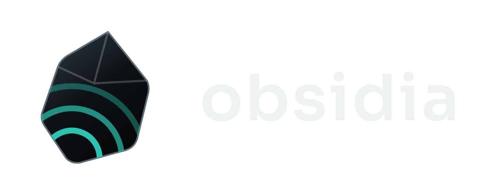
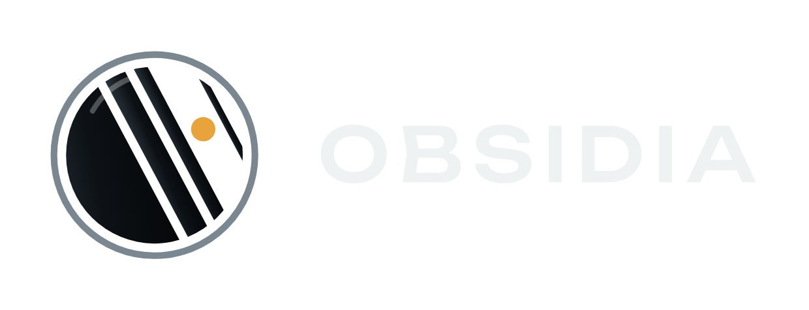

OBSIDIA
Un noir profond pour révéler ce que vos objets cachent.
Un noir profond pour révéler ce que vos objets cachent.
Un boîtier qui met en quarantaine vos objets et qui trace leur communication.
On branche l'objet sur Obsidia, pas sur la box.
Pendant 72 h, Obsidia regarde à qui il parle.
Un rapport en français et un verdict.
L'obsidienne est un verre volcanique noir. Coupée très fine, elle laisse passer la lumière.

J'ai fait 3 logos, j'ai gardé Le Sas : une boîte ouverte, l'objet au milieu et le point vert pour dire qu'il peut entrer.

L'Éclat

Le Sas (retenu)

Le Miroir
Vos objets font des requêtes, Obsidia mène l'enquête.
149 € TTC
Sans abonnement.